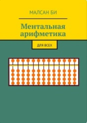

Фундаментальная монография известного американского математика и
специалиста в области компьютерных наук Дональда Кнута, посвященная
рассмотрению и анализу важнейших алгоритмов, используемых в
информатике.
Читать

Ментальная арифметика. Для всех
Авторы: Малсан Би
Область: математика
Данная книга создана для родителей, которые желают помочь своим
детям в освоении принципов ментальной арифметики, предпринимателей,
планирующих открытие курсов по ментальной арифметике, людей,
которые просто желают улучшить работу своего мозга и для всех
тех, кому интересна ментальная арифметика, но они не знают,
с чего начать.
Читать